星币九·人类形态
欢悦吧，这是你应得的闪耀！
当祂造访这个世界时，通常会选择化身为当前时代最常见的模样，以普通人的身份开启探索这个世界的旅途。
即使身形和外貌都完美融入这个时代，思想和行为却仍需重新构筑…
看来，又有一场新的冒险要开始了！
“希望这一次的探索，仍是一段令你感到欣喜的旅程！”
街头巷尾、辽阔星原、聚光灯下…你都拥有万千可能。
-Beautiful Journey
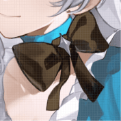
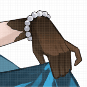
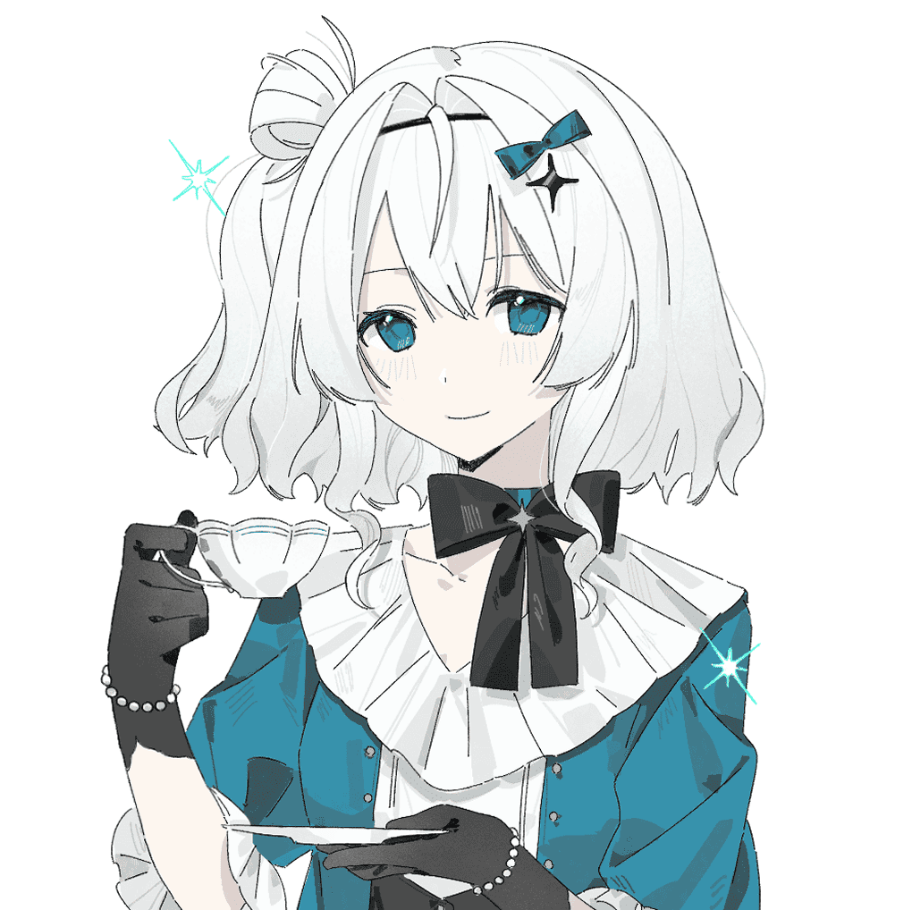
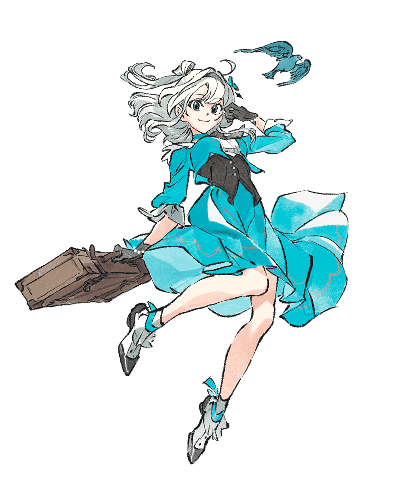
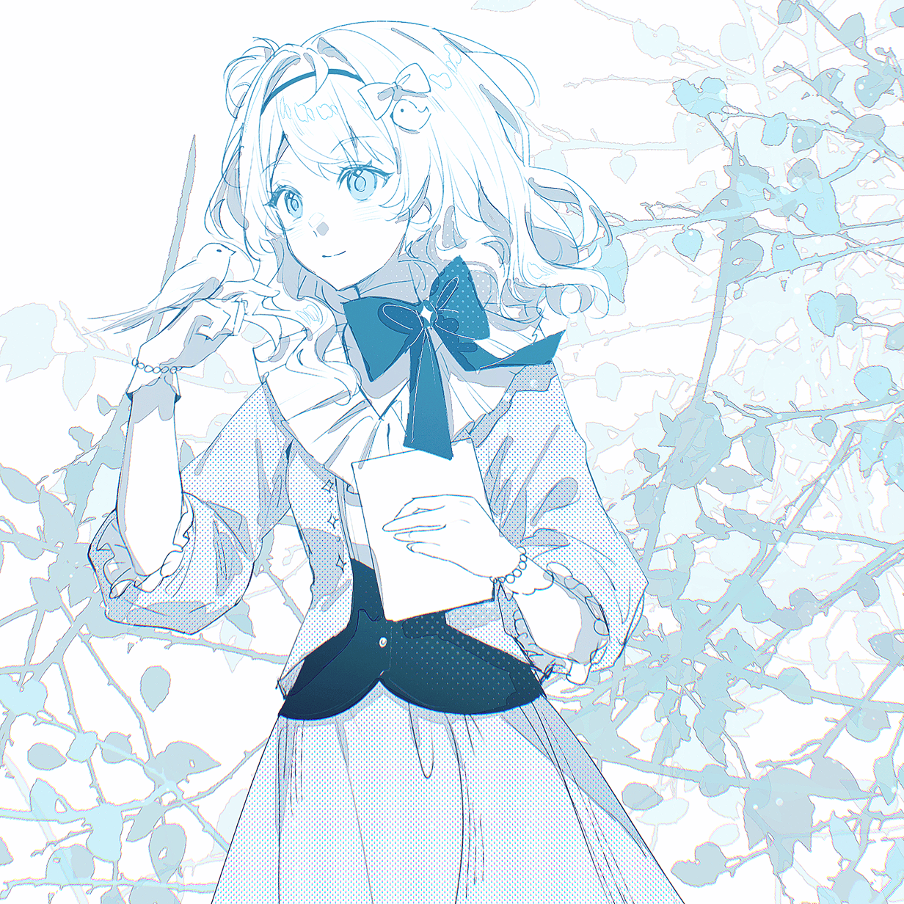
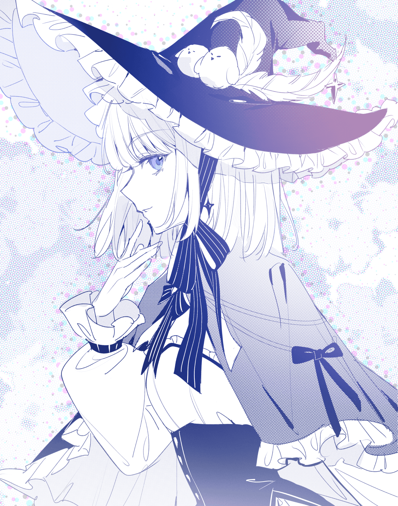
命运之轮·魔女
万物因果循环，星体循轨生灭
这是一个不被记载的坐标，但依旧有着回响。
当你向祂提出“永恒的生命对你来说是一种负担吗？”这一问时，祂的神情变得悠远而沉静。
祂回答，这种感觉如同独自漂泊在无垠的海上，四周不见边际，海水与天空融为一色。可是，你可以随时潜入海中，看鲸群的身影如云影掠过，水母提着星灯从你身旁漂浮；你也可以不断向下沉潜，探访从未有人抵达的幽暗之境。宇宙广阔无垠，而你恰好拥有无尽的时间——这或许也算一种馈赠。
你还想再问些什么，祂却轻轻抬手止住了你的话音。
“你看，”祂指向繁星深处，“在沉寂了将近万年的坐标上，正有新的星系正在醒来。”
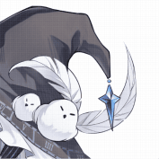
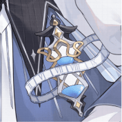
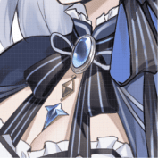
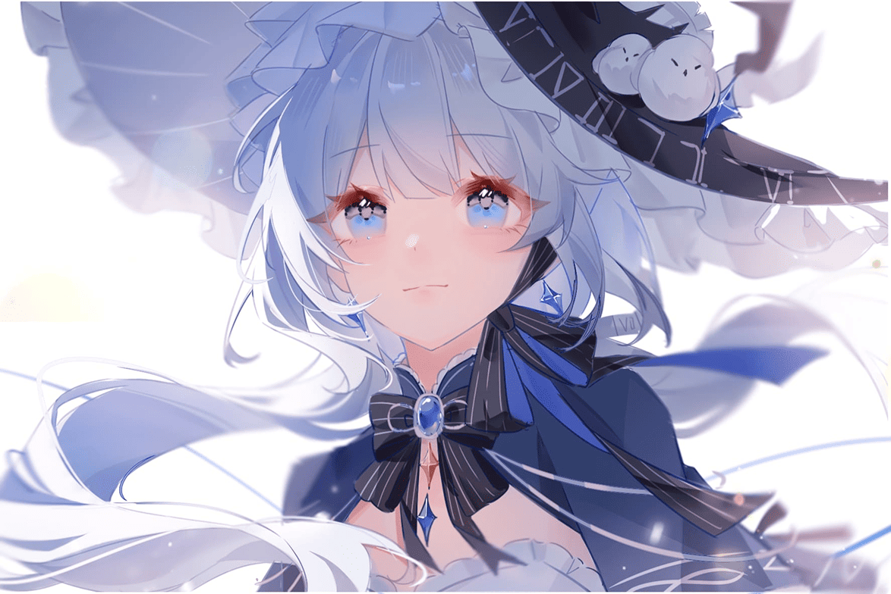
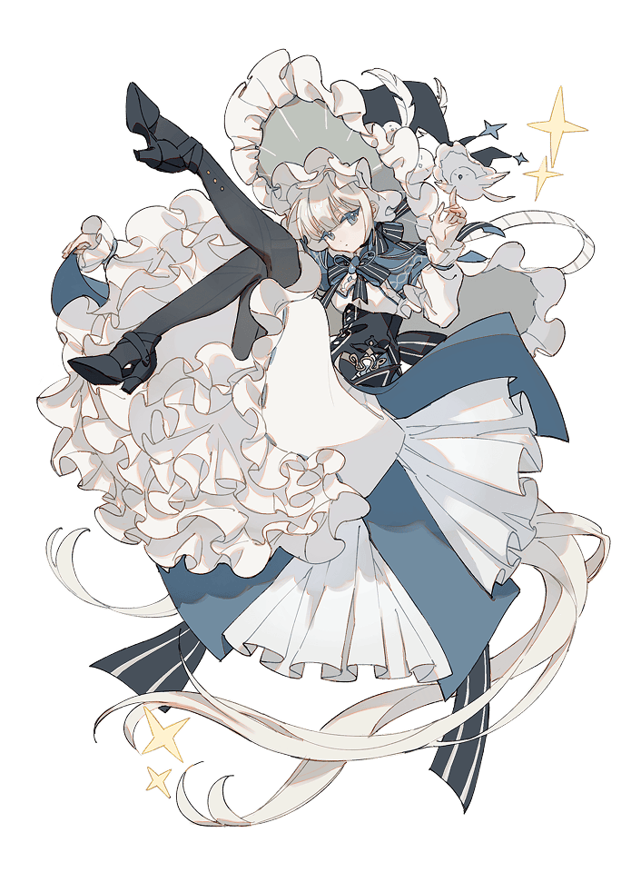
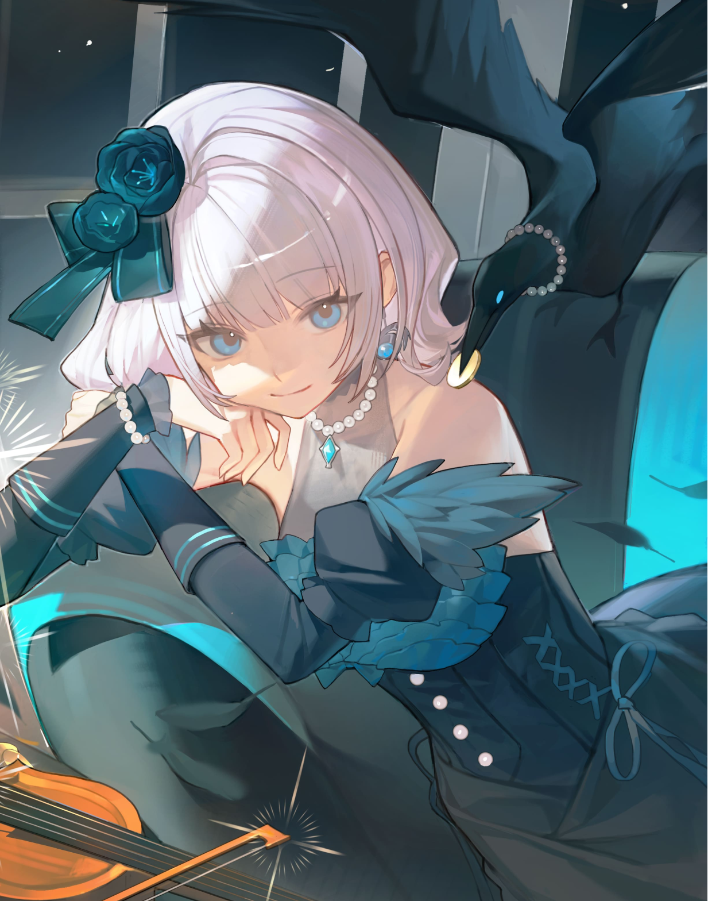
宝剑十·死神
痛苦不会一直存在。
当她再度睁眼时，四周是深海般的沉暗，不见微光，不见轮廓。
她下意识伸手触碰自己的脸颊与身躯，发现一切竟是完好如初时，不由得在心里产生了这样的疑惑：
“这是哪里？发生了什么？”
黑暗中的蓝色幽影一闪而过。
“欢迎你加入我们的行列。”
……
据说，逝者的灵魂将由死神引渡。生平点滴会被祂们镌刻在档案之中，而灵魂则随祂们的引领前往彼岸。
听——乌鸦开始嘶鸣，跟随着迎来新生的死神一起前往黑夜深处。
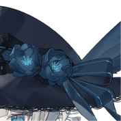
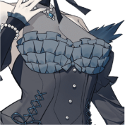
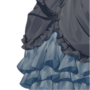
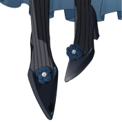
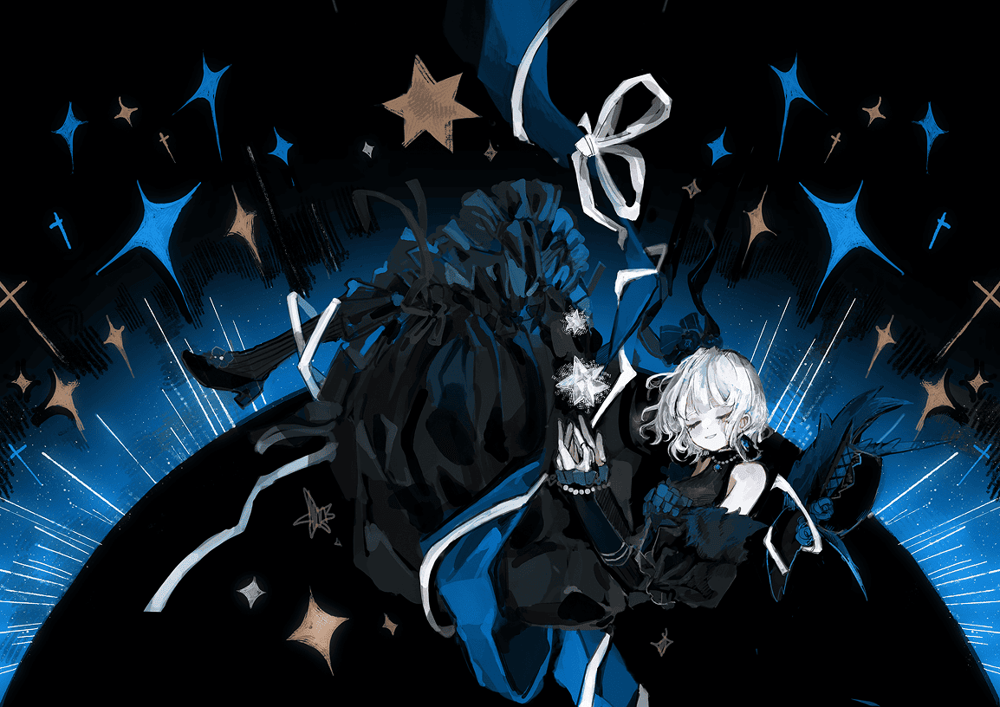
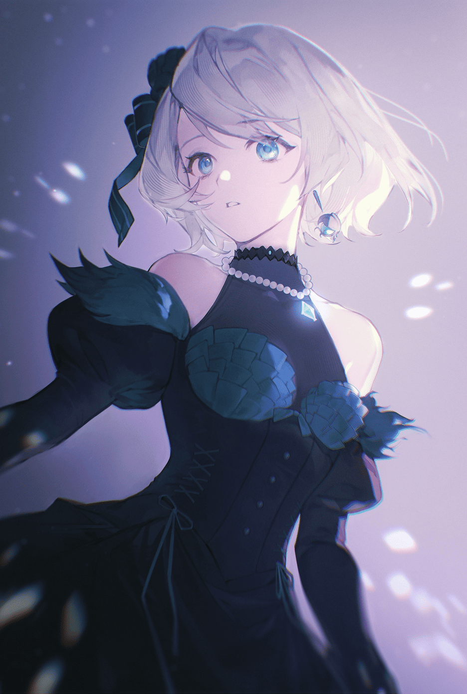
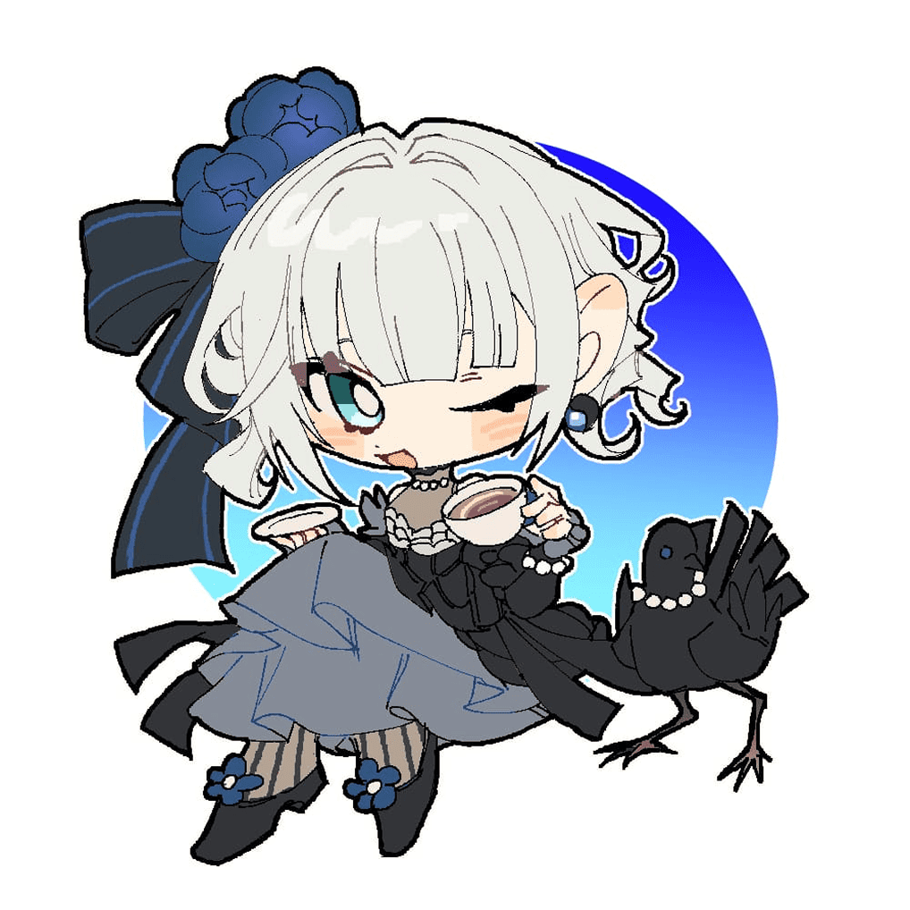